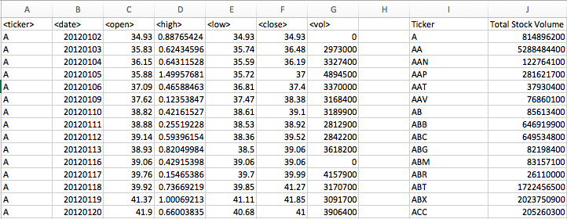
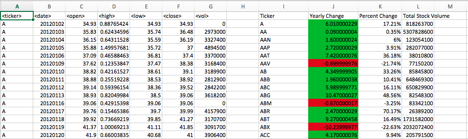

The VBA of Wall Street
-
In this assignment Excel VBA scripting is used to analyze real stock market data.
- Create a script that will loop through each year of stock data and grab the total amount of volume each stock had over the year.
You will also need to display the ticker symbol to coincide with the total volume. It look like the following sheet.  -
Create a script that will loop through all the stocks and take the following info:
Yearly change from what the stock opened the year at to what the closing price was.
The percent change from the what it opened the year at to what it closed.
The total Volume of the stock.
It should also have conditional formatting that will highlight positive change in green and negative change in red.
The results look like:  -
Locate the stock with the "Greatest % increase", "Greatest % Decrease" and "Greatest total volume".
The solution looks like:

-
Make the appropriate adjustments to the script that will allow it to run on every worksheet just by running it once.
The final page look like:

The following questions need to be answered based on the data stored in this worksheet excel csv file.

Data Source
The Stock data used to generate the final report.Built in Excel VBA scripting
[View Code]